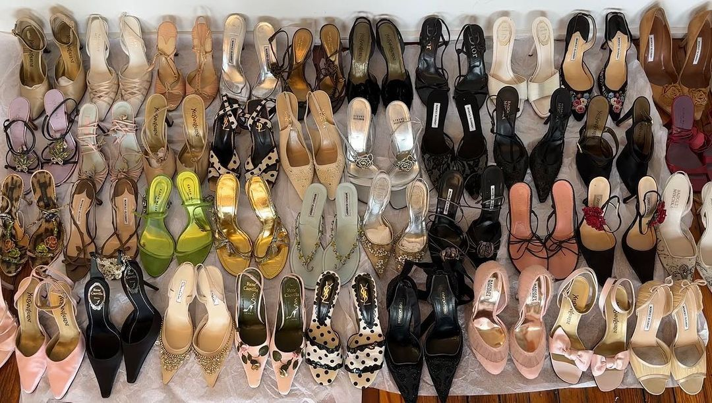

Archival Fashion Authentication Guide
How I Study, Identify, and Verify Vintage Pieces
When I evaluate archival pieces, I start by matching them to runway references, campaign images, and lookbooks to confirm the design existed that season. From there, I study construction details like stitching, hardware, typography, fabric texture, interior labels, and wear patterns.
I cross-reference multiple resale platforms, collector databases, and experienced authenticators. Small details like zipper brand, engraving depth, serial codes, and label formatting matter because they reveal whether a piece matches its documented era.
Quick Checklist
- Matches official runway or lookbook reference
- Correct label placement and typography
- Serial numbers and engravings match the documented era
- Authentic zipper brand and hardware material
- Even stitching and construction consistency
- Natural-light images showing all micro-details
- Cross-checked with verified authentic pieces
Brand Notes
- Chanel: Quilting symmetry, serial sticker placement, turnlock engraving depth
- Balenciaga: Tag era markers, plaque fonts, zipper brand consistency
- Jean Paul Gaultier: Mesh print clarity, tag fonts, label placement
I plan to expand this guide with clearer visuals and a small digital database that compares fonts, hardware, and serial codes across years to help collectors and researchers identify authentic archival pieces more confidently.